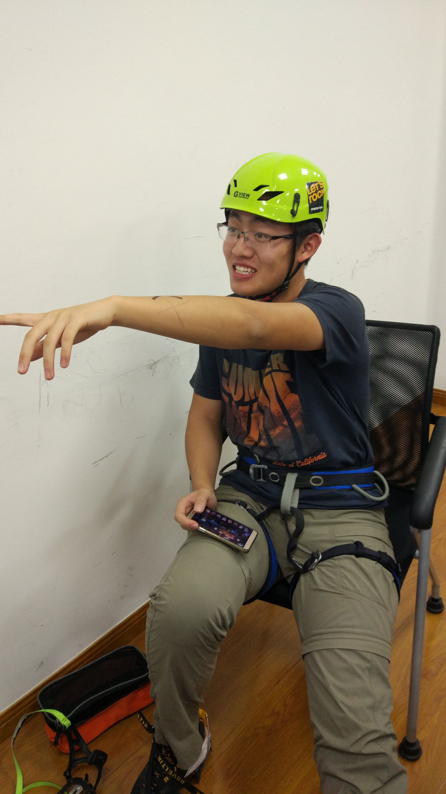

发信人: heysoyoung (亦亦亦木), 信区: outdoor
标 题: Re: 【团爆】装备部！
发信站: 饮水思源 (2016年12月21日23:53:47 星期三)
诶诶诶不是部长的高清正脸吗[手动斜眼]
 screen.width - 200){this.width = screen.width - 200}">
【 在 WiniM 的大作中提到: 】
: 啊，装备部长怎么能没有高清正脸呢……
: http://bbs.sjtu.edu.cn../htm/pics/1482333087207280.jpg
: 【 在 lvganyu 的大作中提到: 】
: : 部长：赵佳伟
: : 我是电院的赵佳伟，来自山东潍坊。今年大二，大一的时候加入的野协。一年过去..
: : 识了不少人，出了几条线，渐渐的也不再是原来的那一条“清流”。
: : http://bbs.sjtu.edu.cn../htm/pics/1482332448207460.png
: : http://bbs.sjtu.edu.cn../htm/pics/1482332451207412.png
: : 每一次出线都是一次非同寻常的经历，不同的时间，不同的人，不一样的天气，不..
: : 风景，不一样的感受。挺喜欢离开喧嚣的都市，远离电子设备，然后在星空下，在..
: : 聊天的感觉。
: : http://bbs.sjtu.edu.cn../htm/pics/1482332454207640.png
: : 副部长：吴舒旸 （这只也是医疗队队长，为了保持神秘感就先不放他的团爆了，..
: : 黑（划掉）美照吧~）
: : http://bbs.sjtu.edu.cn../htm/pics/1482332529207721.jpg
: : 副部长：李宾锐 （对，没错，又是他）
: : 电院大二，正式登山一年多，走过干事会员线若干，参加过观音尖探路，武功山小..
: : 领队，参加过太白小队伍线，户外经验较为丰富。性格开朗，爱好广泛，立志于去..
: : 地方，登更高的山峰，看更美的风景。
--
把大自然当作向导，你将永远不会迷失在黑夜中。
※ 来源:·饮水思源 bbs.sjtu.edu.cn·[FROM: 59.78.13.133]
|